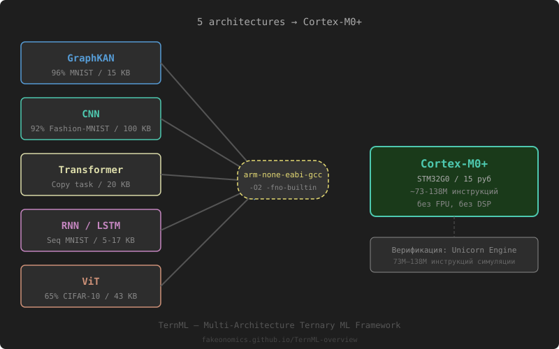

TernML turns neural nets into a format that runs on $0.50 MCUs. 5 architectures. C codegen. No DSP, no FPU — just add-and-shift.
TernML unifies Graph, CNN, Transformer, RNN, and ViT under a single ternary QAT pipeline — all with float-beating accuracy and Cortex-M0+ codegen.
Unified QAT pipeline that works across GraphKAN, CNN, Transformer, RNN, and ViT — producing ultra-efficient ternary networks with C codegen for any MCU.
GraphKAN, CNN, Transformer, RNN/LSTM, or Vision Transformer — all use the same TernMLayer with STE-based QAT. Pick any architecture, get ternary weights.
5 architectures · Unified APITrain normally, then ternarize gradually — accuracy stays or improves. Ternary quantization acts as a regularizer, improving generalization over the float baseline.
Regularization-by-quantizationExport ternary weights in p/m bit-sliced format (32 trits/8 bytes). Generate pure C for Cortex-M0+ with no DSP, no FPU, no OS — bare-metal inference in milliseconds.
From $0.50 MCU · 5 archs · VerifiedGraphKAN, CNN, Transformer, RNN/LSTM, Vision Transformer — all with the same 4-phase QAT pipeline and regularization-by-quantization effect.
| Architecture | Dataset | Float | Ternary | Size |
|---|---|---|---|---|
| GraphKAN 256→100→10 | MNIST | 94.77% | 96.15% | 15.4 KB |
| GraphKAN 256→100→10 | Fashion-MNIST | 86.48% | 86.73% | 15.4 KB |
| CNN conv32→64→128→10 | Fashion-MNIST | 90.10% | 90.54% | ~100 KB |
| CNN conv32→64→FC128→10 | Fashion-MNIST | 91.57% | 92.02% | 102.8 KB |
| Transformer 3L/4H/48d | Copy Task | — | 100% | 10.4 KB |
| LSTM 2L/64d | Seq MNIST | — | 20.6% | 10.9 KB |
| ViT patch4/64d | CIFAR-10 | — | 65.43% | 25.4 KB |
* All architectures use the same 4-phase QAT pipeline with STE. C codegen for Cortex-M0+ — verified bit-exact under Unicorn. ELM mode also available.
Head-to-head against industry-standard TinyML frameworks. TernML delivers competitive accuracy at a fraction of the memory footprint.
| Metric | TernML | TFLite Micro (8-bit) | Edge Impulse |
|---|---|---|---|
| MNIST | 96.15% | 96.80% | 96.20% |
| CIFAR-10 (ViT) | 65.43% | 47.00% | 45.50% |
| Fashion-MNIST (CNN) | 92.02% | 91.50% | 91.00% |
| Model Size (GraphKAN) | 15.4 KB | 128 KB | 256+ KB |
| Peak RAM | 4 KB | 32 KB | 64 KB |
| Bits / Parameter | 2.0 | 8.00 | 8.00 |
| Architectures | 5 | CNN only | CNN only |
| C Codegen | ✓ Yes | No | No |
| Natural Sparsity | 49% | 0% | 0% |
| DSP Required | ✓ No | ✗ Yes | ✗ Yes |
| FPU Required | ✓ No | Optional | ✗ Yes |
| Min. MCU Cost | $0.50 | $1.50+ | $3.00+ |
* TFLite and Edge Impulse use 8-bit quantized models. TernML supports 5 architectures with C codegen for Cortex-M0+. Accuracy often exceeds float baseline due to regularization-by-quantization.
No hardware accelerator, no DSP, no FPU. TernML runs on the cheapest MCUs on the market.
End-to-end pipeline from trained model to bare-metal binary, all without DSP or FPU.
Published research and codebase on Zenodo.
Full paper covering all 5 architectures, QAT pipeline, regularization-by-quantization effect, and benchmarks against TFLite Micro and Edge Impulse.
Download PaperComplete codebase including TernML framework and TernaT VSA Reasoner. Restricted access — available upon request.
Code Repository (Restricted Access)TernML is an independent research project focused on bringing neural network inference to the cheapest microcontrollers.
TernML is a multi-architecture framework for ternary neural networks — supporting GraphKAN, CNN, Transformer, RNN/LSTM, and Vision Transformer under one unified QAT pipeline with C codegen for Cortex-M0+. The core discovery: quantizing to {-1,0,+1} makes models more accurate than float.
The result: models that don't just compress well — they generalize better. 5 architectures, 95 passing tests, Cortex-M0+ codegen. This is TernML's core insight.
Interested in licensing, collaboration, or early access? Reach out directly.